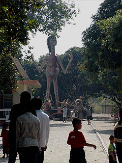

切る 潰す
砕く 味付
串に刺す 焼く 固い所は切り落とす
これで鍋料理の仕込みはOKだ。
最後にもう一丁！
WatSaenSuk/Chonburi
泰国地獄四天王之四 チョンブリの街から程近いバンセーンにある寺、ワットサンスーク。 ここも様々な奇怪人形が渦巻く地獄が御自慢の寺だ。 寺の入口。左に見えるのは中華スタイルの彌勒仏。 この彌勒仏、顔が凶悪なのもさる事ながら、ヘソに穴が開いていて、そこへ賽銭を投げ込むというスタイルになっている。 タイのチビッコ達が一生懸命コインを投げてました。 中に入る前に駐車場にあったセメント像を幾つかチェック。 何故か夫婦人形。 オヤジタワーと金の仏像。脇の下にヤモリが寝てました。 さて、境内に足を踏み入れる。ゲート横の受付に幾らかのお布施を渡すと花と線香を渡された。 中に入ると最初はいたって普通の寺の装いだ。本堂があり、八曜の守り本尊（自分の産まれた曜日ごとの守り本尊）などがある。 しかし本堂を過ぎた辺りから徐々に雲行きが怪しくなってくる。 何故か動物のセメント像が徐々に増えて来て、次に仏教説話のジオラマが続く。 そしてそのエリアを抜けると・・・  出たあ〜！ タイ地獄界のシンデレラ城、巨人像〜！ しかも舌長すぎるぞ！ そして巨人の足元に広がる阿鼻叫喚の世界。白昼堂々と一般の人間が耐え得るギリギリのヴァイオレンスシーンが展開されている。 お約束のトゲトゲの樹もあります。 赤パンに赤鉢巻きのオッさん達が係員の方々。さあ、今日も職務を遂行しましょう！ 切る 潰す
砕く 味付
串に刺す 焼く 固い所は切り落とす
これで鍋料理の仕込みはOKだ。
・・・さて。 この寺はパタヤからも比較的近いので 白人さんの観光客も結構来ている。 私が訪れた時も東欧系の団体さん（ファミリー客多し）などが来ていたのだが、皆、すっごくイヤ〜な顔してました・・・ 勿論タイのチビッコ達は大はしゃぎで、地獄の責め苦を「これは責めが弱い」とか「これは結構効くぞ」とかあれこれ品評してたみたいです。 頼もしいぞ！タイのチビッコ達！ 地獄のセメント人形はかなり強烈なキャラ揃い。 目玉が飛び出しちゃってます。 こちらのお方はどうしちゃったんでしょう？ 境内にはあちこちに賽銭を要求する微妙な輩も多い。 左のお嬢さん（趣味；日焼けサロン通い）は口の中へ。右の御老人は杖の中へ。で、賽銭の回収は足元の台のところ。 御老人は幼子の両手を紐で縛ってるのだが、なんでそんな奴に賽銭あげなきゃいけないんだ！ そんなこんなで地獄エリアも終了。 しかし今度は地獄以上に意味不明な人形が続く。 こちらは十二支行列。それぞれコスプレした人達を乗せているが、牛には素人が乗っていた・・・ 猿なんかは元々人が乗るものではないので結構苦しい体勢で頑張ってます。 コブラ2題。 新しいヘア−スタイル。 そしてコブラに敢えて噛み付かせるムツゴロウさん的な動物の愛し方。 こちらは十字架に張り付けになった人を救っているのだろうか？良く判らん。 「人の後ろ指さすべからず」という事か。 アカンベーしているのは明らかに綾戸智絵。紅白出場おめでとうございます。 十二支を過ぎると、売店があり、飲み物や土産物が置いてあるのだが、やけに玩具が多い。 これは土産ではなくて水子供養のお供物だった。 これが玩具が供えられているところ。タイには地蔵信仰などないが、亡き子を思う親の想いは万国共通ということだろうか。 ←変態と大仏→ 「亀の台座に投げたコインが乗ると願いが叶います」的な扇情的な文句に乗せられ皆、一生懸命コインを消費している。 亀が回転してたりすると、もっと盛り上がるのだが。 その他、ナマズがひしめく放生池や何故かヒンドゥーの神々が並ぶエリアや五百羅漢像が並ぶエリアなどがあり、盛り沢山の内容だった。 精神的にお腹一杯になりながら境内を出るとこんな看板と寄付のお願いが。 おおお。大観音建てるってか！ 期待してまっせ！
最後にもう一丁！
泰国超絶地獄列伝 珍寺大道場 HOME